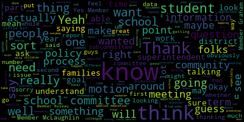

[McLaughlin]: Here.
[McLaughlin]: Yes.
[McLaughlin]: I wanted to thank you and Mia for introducing me to the Food Security Task Force and Shira and Carol and Sarah Klugisch and all the folks in Medford who are working on this really important issue.
[McLaughlin]: I learned two very important things from the Food Security Task Force when I attended their meeting.
[McLaughlin]: And one was that I said, you know, why don't you just call it hunger?
[McLaughlin]: And you know, why do you keep calling it food insecurity?
[McLaughlin]: What does that actually mean?
[McLaughlin]: And they shared with me that we're all hungry every day, but food insecurity is very different than being hungry.
[McLaughlin]: Hungry, we know when our next meal is coming.
[McLaughlin]: Food insecurity is when you don't know where your next meal is coming from and how you'll get it.
[McLaughlin]: And that really stood out to me.
[McLaughlin]: And also where they were sharing the one in nine Medford households experience food insecurity.
[McLaughlin]: And one of the things that the food,
[McLaughlin]: task force really wanted to work on was de-stigmatizing food insecurity because often it's the case that we know people that are experiencing food insecurity and they're not sharing that with us because of the stigma attached to
[McLaughlin]: having food insecurity and being hungry.
[McLaughlin]: So I really applaud the work of the Food Security Task Force.
[McLaughlin]: And thank you, Mia, and all for bringing it forward.
[McLaughlin]: And I would encourage community members to attend the meetings and get involved as much as you can, because I know that none of us want to see a child hungry.
[McLaughlin]: Thank you.
[McLaughlin]: Yes.
[McLaughlin]: Thank the students for coming out tonight and their family and say that I'm proud of you for your self-advocacy skills.
[McLaughlin]: Advocating and getting up in a microphone with lots of people looking at you in a whole room full of adults can be intimidating and it's really shows us all something that Medford should be proud of.
[McLaughlin]: teaching you all to do this, and we appreciate that you came out in front of everybody to do that.
[McLaughlin]: If I understood what you were saying correctly, you were looking for the retroactive for the $13 an hour that the mayor had, previous mayor, Mayor Burke, had suggested in January 2020 would be the current rate and a waiver of the certificate that you were wanting to see.
[McLaughlin]: I think those were the three items.
[McLaughlin]: Wanted to clarify on that.
[McLaughlin]: And then also wanted to make sure, Mayor Kern, that the students know what a committee of the whole meeting is.
[McLaughlin]: And maybe, I don't know if you want to explain that so that they could understand.
[McLaughlin]: And that if you're interested in participating, that's a public meeting and something that you get to see a lot of what happens behind the scenes in those meetings.
[McLaughlin]: And they're good to come to to learn more as well.
[McLaughlin]: So point of clarification, the committee of the whole meeting is actually going to be an executive committee meeting, not a committee of the whole meeting.
[McLaughlin]: But then the other parts are?
[McLaughlin]: Just another point of clarification, I'm wondering how the students will be informed of the committee of the whole meeting date.
[McLaughlin]: They are posted online, but that means you have to go and look and check online.
[McLaughlin]: Is there a way that we can push information to the students and to the after school program about the date?
[McLaughlin]: Thank you for your report.
[McLaughlin]: You're welcome.
[McLaughlin]: Tony.
[McLaughlin]: I had a question on the communication that you sent out where
[McLaughlin]: It says federal officials are advising travelers who arrive in the US after February 2nd from mainland China to self-quarantine at home for 14 days.
[McLaughlin]: So this is getting to Member Ruseau's point about the self-quarantine.
[McLaughlin]: So do we have any mechanism in our school to understand if we have school community members that have traveled to China in the past 14 days?
[McLaughlin]: And if I understand the correspondence, though, it's whether they're symptomatic or asymptomatic that they're recommending a 14-day self-quarantine.
[McLaughlin]: Is that right?
[McLaughlin]: Right, asymptomatic.
[McLaughlin]: Yeah.
[McLaughlin]: And so, but there's no real enforcement of it.
[McLaughlin]: Is that accurate?
[McLaughlin]: Sure, of course.
[McLaughlin]: But I mean, there's no, from the public health officials or anything like that, there's no way to track or enforce or anything like that, right?
[McLaughlin]: Not to my knowledge.
[McLaughlin]: And is this more significant?
[McLaughlin]: I don't know.
[McLaughlin]: been watching it all on the news, because sometimes I feel like there can be elements of hysteria to these things, too.
[McLaughlin]: But is there... There are a lot of elements to hysteria.
[McLaughlin]: Is this different from a typical flu?
[McLaughlin]: Thank you.
[McLaughlin]: That helps, I think, with a little bit, perhaps, with the hysteria piece of it.
[McLaughlin]: And then is the symptomatic, are the symptoms, you know, more severe than the average flu or?
[McLaughlin]: They tend to be lower respiratory symptoms.
[McLaughlin]: »» Thank you so much for your expertise.
[McLaughlin]: Appreciate it.
[McLaughlin]: Thank you.
[McLaughlin]: Thank you.
[McLaughlin]: Thanks for the report, Assistant Superintendent Patterson.
[McLaughlin]: I have a few questions on the resignation and retirements.
[McLaughlin]: It looks like since July, we've had
[McLaughlin]: eight paras retire or resign?
[McLaughlin]: I'm wondering which those are.
[McLaughlin]: Are they resign or retire, or do you know?
[McLaughlin]: Resignations.
[McLaughlin]: And do you know, are we filling those positions, or what the status is?
[McLaughlin]: So are we down eight paras right now?
[McLaughlin]: Do you know?
[McLaughlin]: How many are we down?
[McLaughlin]: OK, so you've hired six of the eight that have, you've replaced six of the eight that have, OK.
[McLaughlin]: And so then for substitutes, for the daily substitutes, and the per diem substitutes, and the long term substitutes, I was given information, and I'm wondering if this is helpful or accurate.
[McLaughlin]: If there's a para that calls in sick to the special education classrooms,
[McLaughlin]: the system comes up as no substitute required.
[McLaughlin]: Is that accurate?
[McLaughlin]: So how does that work if there's an IEP that's requiring paras in the classroom, if the para's not being replaced if they're out sick?
[McLaughlin]: But in terms of replacing substitutes in the classroom, so regarding the personnel report.
[McLaughlin]: So if a para's out, and they're saying no substitute required on the personnel list when a para calls in sick, there's no substitute going into that classroom.
[McLaughlin]: And I guess these are also high needs classrooms.
[McLaughlin]: They're not gen ed.
[McLaughlin]: Sure, I understand that.
[McLaughlin]: But is the system, is the software system coming up saying no substitute required, which obviously if that's what it's saying then there's definitely not going to be a substitute, never mind whether there are any
[McLaughlin]: available or not, that's what I'm asking.
[McLaughlin]: Are open no substitutes?
[McLaughlin]: Oh, open for substitutes.
[McLaughlin]: In what instance would it say no substitute required?
[McLaughlin]: OK.
[McLaughlin]: So I guess I'm wondering, is it a personnel question or a special ed question that I should be directing this if there are high needs classrooms where a para is calling in sick and the personnel
[McLaughlin]: memo that comes up on the, whatever your software system is on the website, that says no substitute required.
[McLaughlin]: How is that addressed?
[McLaughlin]: Would that be personnel?
[McLaughlin]: Would that be special education?
[McLaughlin]: OK.
[McLaughlin]: And so who's we?
[McLaughlin]: We let you know if we see that?
[McLaughlin]: OK.
[McLaughlin]: So if powers are getting
[McLaughlin]: If information is coming up when a para calls in sick and the system says no substitute required and we know it's a substantially separate or high needs classroom, they should be letting folks know that that's a glitch in the system and that shouldn't be happening.
[McLaughlin]: Is that what I'm hearing you say?
[McLaughlin]: Okay, great.
[McLaughlin]: Thank you.
[McLaughlin]: A lot of hard work and work in progress, so thank you for the report.
[McLaughlin]: I do have some questions around the equitable piece of it, and I appreciate you acknowledging that we're doing the best we can with what we have in terms of the programmatic elements.
[McLaughlin]: You had said that
[McLaughlin]: We have to ensure that the children are going to the school that's most appropriate for their needs, which I think begs a bigger question in our district around equity.
[McLaughlin]: All of our schools should be able to deliver for each of our children's needs.
[McLaughlin]: And I know that that's a process that we're working towards and that I hope that the school committee continues to work towards.
[McLaughlin]: But I have questions in that realm.
[McLaughlin]: And we get a lot of these questions.
[McLaughlin]: So getting back to what was happening last year with the
[McLaughlin]: with the audit.
[McLaughlin]: Some of our schools have disproportionately more high-need students, whether they be English learners, students with disabilities, economically disadvantaged students.
[McLaughlin]: And so if you're coming from a pool of elementary school students that have a higher population of high-need students, and then they're rounding out the number, or everyone's getting the same amount of students that are in the lottery.
[McLaughlin]: One school has a disproportionate amount of
[McLaughlin]: English learners or students with disabilities, and then their numbers are skewed because they are going to a particular environment.
[McLaughlin]: And so how is that being adjusted for is one question that I have.
[McLaughlin]: Another is we talk about sibling preference.
[McLaughlin]: What happens if you have a sibling that is a student with a disability that's going to a programmatic piece?
[McLaughlin]: Or if you have a sibling who you've aged out of the
[McLaughlin]: specific English learner program that might be applied for that program or for that school and you're going to another.
[McLaughlin]: So how are we addressing sibling preference for our students with high needs or that have siblings with high needs.
[McLaughlin]: And then the third is what if students are identified after the fact.
[McLaughlin]: What if you know the lottery happens and they're enrolled into a school and then they're subsequently identified as having a particular disability or they enroll into our schools initially and they're in one school
[McLaughlin]: And then they're subsequently identified.
[McLaughlin]: How are we addressing that?
[McLaughlin]: Are we taking them out of a school mid-year to deal with programmatic elements?
[McLaughlin]: Or how is that being addressed?
[McLaughlin]: Thank you.
[McLaughlin]: Oh, it was just how are we going to address the equity for students with high needs so that if we're being random and trying to be equitable across the schools, that we're not addressing all of the students in terms of the equity for the lottery because of the programmatic elements.
[McLaughlin]: But I think that's probably a much bigger question than you can address tonight, Dr. O'Keefe.
[McLaughlin]: So could we get comparable data, or perhaps this is a motion that I need to make for comparable data on those populations so we can see what that distribution is among our schools?
[McLaughlin]: Well, the economic, yeah, sure, if we have the data, economically disadvantaged, but also our students with disabilities and our English learners, like what's the distribution across the schools?
[McLaughlin]: And so for the, if we know that the McGlynn is getting all of our English learners, then clearly they're going to have a higher need for English learners.
[McLaughlin]: So then equity is not that everybody gets the same, it's that everybody gets what they need, right?
[McLaughlin]: So if we know that the McGlynn's going to have a higher need, are they getting more resources to support their need?
[McLaughlin]: versus other schools.
[McLaughlin]: So I guess I'm looking for similar data.
[McLaughlin]: So I guess I'm making a motion that if we could, this is a great report, if we could have, make a motion to have the same sort of data breakout for our students with disabilities, our English learners, and our economically disadvantaged among the middle schools.
[McLaughlin]: If we could do that.
[McLaughlin]: I make a motion for that.
[McLaughlin]: Thank you.
[McLaughlin]: Thank you.
[McLaughlin]: Thank you just point of clarification.
[McLaughlin]: Are you asking for this member Graham annually and then also for the sub lottery?
[McLaughlin]: Can you qualify what you mean by that?
[McLaughlin]: Thank you, Assistant Superintendent Caldwell for this report.
[McLaughlin]: And the flyer looks great.
[McLaughlin]: I'm happy to see the child care interpreter available by request.
[McLaughlin]: And I really appreciate at the bottom of the flyer for the Medford Family Network that the interpretation services are actually offered in the language.
[McLaughlin]: of folks, or at least three of the languages folks.
[McLaughlin]: So I'm wondering, can that information also be shared on our website if it's not already?
[McLaughlin]: Okay, so in the language that folks need for the number?
[McLaughlin]: Yes.
[McLaughlin]: Okay, great.
[McLaughlin]: And then for the health department document, folks will get that translated as needed based on whether they let you know that they need translation?
[McLaughlin]: I also support the resolution.
[McLaughlin]: Thank you.
[McLaughlin]: I just, um, I'm wondering though, um, um, assistant superintendent call.
[McLaughlin]: Well, do we have data on how many kindergartners there are and how many were actually
[McLaughlin]: are choosing Medford Public Schools or choosing other schools?
[McLaughlin]: Do we even know that?
[McLaughlin]: So we don't even know, really, how much money we may or may not be losing, or do we?
[McLaughlin]: Because we have to pay it, right?
[McLaughlin]: Right.
[McLaughlin]: So we know.
[McLaughlin]: So are we getting retroactive data on that?
[McLaughlin]: That's what I'm asking.
[McLaughlin]: Not to my knowledge.
[McLaughlin]: No, that would be interesting too.
[McLaughlin]: But it would be good for the school committee to know.
[McLaughlin]: And frankly, the staff and assistant superintendent and principals, if we're talking about what these numbers really are translating into, and people should know how great our schools are, because we do, right?
[McLaughlin]: Yeah.
[McLaughlin]: OK.
[McLaughlin]: Just a point of clarification, since the data is available or if it's available, that it could be referred to the subcommittee on this matter so that we could further drill down into that as we're making some planning.
[McLaughlin]: Thank you all very much for this.
[McLaughlin]: I can see that there's a lot of hard work put into it.
[McLaughlin]: I love the edgespeak, right?
[McLaughlin]: We've had lots of conversations about that over time.
[McLaughlin]: Send it to all the grad schools around town, please.
[McLaughlin]: No.
[McLaughlin]: But no, the edgespeak is really important, especially when families are having conversations and the acronyms roll off our tongues like we don't even notice anymore.
[McLaughlin]: And it's really important for people to be able to stop and remind us that we can tell them what those acronyms mean.
[McLaughlin]: So thank you for including that.
[McLaughlin]: I think the hyperlinks are really great.
[McLaughlin]: I'm glad to see it.
[McLaughlin]: I'm excited that I'm also on the subcommittee.
[McLaughlin]: So I'll be excited to be working with folks.
[McLaughlin]: I did have a couple of questions.
[McLaughlin]: I wanted to ask how you guys were chosen as district administrators to work on this particular strategic plan.
[McLaughlin]: Was it, did you self-select, did they volunteer, self-select, were you chosen, like how did that work?
[McLaughlin]: What was that process?
[McLaughlin]: Especially when you're wordsmithing everything.
[McLaughlin]: Yeah, I just had a small point of,
[McLaughlin]: I guess a question, and I'm sure you guys, some of you guys have thought about this, but I'm wondering how you're going to address it or how you want the community to address.
[McLaughlin]: So the acronym's great for the strategic plan, but as you know, especially Stacey, that that has a whole other meaning in childhood trauma.
[McLaughlin]: And so how do we, how, you know, I think about the differentiation of that.
[McLaughlin]: So ACES is also the Adverse Childhood Experience Study, which is a very large study on childhood trauma and the effects of childhood trauma on, you know, children's
[McLaughlin]: long-term effects on their lives and so on and so forth.
[McLaughlin]: So did that come up in your conversations at all?
[McLaughlin]: Thank you.
[McLaughlin]: Member McLaughlin.
[McLaughlin]: Regarding communications, a few things.
[McLaughlin]: One was I wanted to make a motion for school committee member updates as part of our weekly or bi-monthly meetings so that the community and each other can know what each school committee member is working on.
[McLaughlin]: So I'm making a motion under the communications to have school committee member updates.
[McLaughlin]: I have another motion under communication.
[McLaughlin]: Thank you.
[McLaughlin]: I've been coming to meetings for years in the audience and I appreciate those of you that are still out there.
[McLaughlin]: Thank you.
[McLaughlin]: I know how tiring it can be sitting out there and watching all night.
[McLaughlin]: But there's been a lot of conversation over years about providing materials that are in our packets to the public whenever possible.
[McLaughlin]: So obviously we wouldn't be providing materials that are confidential.
[McLaughlin]: But there's a lot of material here that's very useful.
[McLaughlin]: I also wanted to ask if we could get a copy of the PowerPoint from tonight, just because it's helpful for referencing in the past.
[McLaughlin]: But I'd like to make a motion that we are able to create weekly school committee packets for the community that are online and available, so that the community can access what we're talking about.
[McLaughlin]: Because having sat on the other side of that railing, I know that you're getting
[McLaughlin]: bits and pieces of the information, but it's really helpful to have things in front of you or to be able to look at it in advance so that if you have any questions in the future and so I'm making a motion to put that material online.
[McLaughlin]: Sure.
[McLaughlin]: I think that it's reasonable.
[McLaughlin]: I assume that the reports are being provided electronically, right?
[McLaughlin]: So not printed.
[McLaughlin]: So that, I mean, I'm just imagining that if there's a, and again, I'm not sure of processes, but if there's a, an electronic report that's going to administration, then once the report is reviewed, obviously by, by central administration, what have you, then it,
[McLaughlin]: It also gets forwarded to the webmaster or whoever to put together these packets that can be available by Monday or whenever so that people have it before the meeting.
[McLaughlin]: I wouldn't expect simultaneously, but I'm assuming the reports are all sent electronically anyway, so it's sort of just another step in procedure.
[McLaughlin]: And maybe it goes to the policy subcommittee just to figure out what the actual procedure is, what that looks like.
[McLaughlin]: And I'm happy to refer it to that just in terms of
[McLaughlin]: how we want to step it so that you have a timeline that's reasonable.
[McLaughlin]: Because we definitely aren't interested in giving people more work.
[McLaughlin]: I'm not interested in giving people more work.
[McLaughlin]: I really just want to share information.
[McLaughlin]: Yeah.
[McLaughlin]: OK.
[McLaughlin]: Thank you.
[McLaughlin]: Thank you, Member van der Kloot, for the information on the enhanced reading this Wednesday for the curriculum subcommittee.
[McLaughlin]: And I'm assuming that that's this Wednesday this time.
[McLaughlin]: It's not Wednesdays all the time, or?
[McLaughlin]: OK.
[McLaughlin]: Yeah, just want to make sure.
[McLaughlin]: I'm thinking of CPAC and other things that are happening.
[McLaughlin]: No, not this week, second Wednesday.
[McLaughlin]: Yeah, thank you.
[McLaughlin]: And then the other is regarding the high school vision committee and the 41 applicants when you're talking about there's 11 to 13 and you want it to be as fair as possible.
[McLaughlin]: So to that end, are you thinking about, I'm wondering how that fairness is possible.
[McLaughlin]: Is it a lottery?
[McLaughlin]: Is it you're looking at different age levels?
[McLaughlin]: You're looking at different schools, grades, like how?
[McLaughlin]: Yes.
[McLaughlin]: So, um, thank you.
[McLaughlin]: I just have a question.
[McLaughlin]: So if the rules and so, so what I'm understanding this is saying is that, um, the rules policy and equity subcommittee will make, will help devise policy on how reports are requested.
[McLaughlin]: Um, is that accurate?
[McLaughlin]: Thank you.
[McLaughlin]: Thank you.
[McLaughlin]: Yeah, that's good.
[McLaughlin]: So, but I'm assuming there'll be a process for whatever reports were requested, obviously, as well, that there's a timeline or whatever, because a lot of these are from... And again, since they're from 2019,
[McLaughlin]: at this point, it's come back to November of 2019, or April, or October, or whatever, 2019, that there'll be questions, like you said, there'll be some documentation of why these reports were requested, and that's reported out to the public about why the reports are being requested.
[McLaughlin]: No, I wouldn't imagine that you'd get the list of the actual students, but I think that is really interesting information just in terms of how many, how much, you know, other things.
[McLaughlin]: But so, okay, so there's going to be a process is sort of what I'm understanding.
[McLaughlin]: instead of just asking.
[McLaughlin]: So that's helpful and I assume that that process will include a timeline and reporting out to the public as the subcommittee would need to do.
[McLaughlin]: Is that right?
[McLaughlin]: and the subcommittee will report out that rule.
[McLaughlin]: The recommendation.
[McLaughlin]: To this recommendation.
[McLaughlin]: But also, yeah, so that I'm just asking here's a stick and I'm sorry, it's just.
[McLaughlin]: So this tell me when you tell me OK.
[McLaughlin]: Yep, now I see it.
[McLaughlin]: Thank you.
[McLaughlin]: Go ahead.
[McLaughlin]: So this would be an example of in the future or something that would have to go through this, the policy, what, yeah, the rules, this request, right?
[McLaughlin]: That resolution that the mayor offered for the report on dyslexia, that would be one, again, that would not be offered in this format.
[McLaughlin]: It would be offered in whatever the policy subcommittee or rules subcommittee decides.
[McLaughlin]: No, but I just mean in the future.
[McLaughlin]: I'm trying to use an example.
[McLaughlin]: Is that right?
[McLaughlin]: Thank you.
[McLaughlin]: So I had had an agenda request for a school safety procedural update be added to the agenda and it was unfortunately put under requested reports.
[McLaughlin]: I'm not looking for a report per se.
[McLaughlin]: I'm looking for
[McLaughlin]: I hope that doesn't constitute a report.
[McLaughlin]: But I think given the circumstances of the past two weeks with the question of, you know, process and protocol around this unidentified powder, which thankfully was resolved, and thank you all for your hard work on that.
[McLaughlin]: I know that was a lot of hours and energy and input.
[McLaughlin]: But understanding, and I think it's a longer conversation
[McLaughlin]: Right.
[McLaughlin]: So this had also been our first school committee meeting as a new member had the list of requested reports.
[McLaughlin]: Our second did not have them on the agenda anymore.
[McLaughlin]: And then I was curious about what that was and where the status of the outstanding reports are.
[McLaughlin]: But since this topic is being moved to,
[McLaughlin]: the Rules, Policy and Equity Subcommittee of which I am a member.
[McLaughlin]: I am okay with moving this topic there and figuring out how we report to the public on these outstanding reports.
[McLaughlin]: Yes.
[McLaughlin]: Thank you for that thorough report.
[McLaughlin]: Member Van der Kloot, I was wondering about the growing up and staying healthy Michigan model health curriculum with supplements.
[McLaughlin]: Are those supplements regarding students with disabilities or EL learners?
[McLaughlin]: Do you know what the supplements are?
[McLaughlin]: Right.
[McLaughlin]: Thank you.
[McLaughlin]: And so I'm wondering about the special education and EL access for the curriculum.
[McLaughlin]: And I know, aside from scheduling, I'm talking really content.
[McLaughlin]: Ms.
[McLaughlin]: Perry, if you can help with that.
[McLaughlin]: Sure.
[McLaughlin]: You know, is it driven by, I guess that's question number one, and question number two would be that I don't know if the scheduling thing is driven by IEP goals, so if there are parents watching and they feel that their middle schoolers need sex education, they might be thinking about what the IEP, or any health education, what the IEP goals are to reflect that.
[McLaughlin]: Is that how it's driven, or?
[McLaughlin]: For the English learners.
[McLaughlin]: Okay.
[McLaughlin]: Thank you.
[McLaughlin]: Yes, please.
[McLaughlin]: Melanie McLaughlin.
[McLaughlin]: I understand and respect our co-members' positions, but I think that this is an important topic, at least for the rest of us to understand, especially as I'm considering our learners who are more vulnerable.
[McLaughlin]: And that doesn't necessarily mean that our parents want to automatically opt out.
[McLaughlin]: It just means that we want to be aware of and understand how this will be presented in a way that's differentiated, which I know we don't won't know that yet because we won't know how you're doing that.
[McLaughlin]: But I certainly want to see the big picture around like where we're going and how
[McLaughlin]: that's going to work.
[McLaughlin]: So respectfully, I would say that I'm happy to take the time over the two weeks.
[McLaughlin]: I'm certainly not going to read every single line item, but I want to have a broad understanding and picture of what it is that we're presenting to.
[McLaughlin]: So I would make a motion to, or second your motion to table.
[McLaughlin]: Thank you.
[McLaughlin]: I appreciate the conversation.
[McLaughlin]: I was on the subcommittee, and this is why it's so good to have the conversation after subcommittee, because other things come up, and we get an idea of what questions we maybe didn't vet in the subcommittee.
[McLaughlin]: So one thing that's come up to me and might come up for community members is, what happens when there's obviously, say, a really pressing issue, like we have a pressing issue,
[McLaughlin]: that's come up in the community and we have an agenda list.
[McLaughlin]: We just, what?
[McLaughlin]: Yeah, like a coronavirus.
[McLaughlin]: I didn't want to say it, but yes.
[McLaughlin]: Like something like that, that's sort of a pressing issue and sort of, you know, prioritizes over all the other agenda items.
[McLaughlin]: What is the process for that?
[McLaughlin]: And should, and if there's not one, should we be including one in the subcommittee?
[McLaughlin]: Okay.
[McLaughlin]: And then so, and then maybe including in the policy what that process is so that, you know, for notification for, you know, whether things get rippled down or totally re assigned or, or why I just think we should be thinking about it.
[McLaughlin]: Point of information, Member McLaughlin.
[McLaughlin]: Point of information, yeah.
[McLaughlin]: But I guess the question was then how it ripples down for the others.
[McLaughlin]: So how is that affected?
[McLaughlin]: And I thought the point was that we were going to be knowing ahead of time what was on the agenda and how things rippled through.
[McLaughlin]: So obviously if the superintendent or chair have things that they're including on the agenda,
[McLaughlin]: that also includes our line items, our agenda items that were put in with these great notations that we have next to them about who submitted what and when and all those things.
[McLaughlin]: How then is it after they've put their things on the agenda and an emergency comes up, how then is it addressed and communicated to everybody to know what is in fact on the agenda, what's not, what's going to be reprioritized, and what's not?
[McLaughlin]: Yes, thank you for the report.
[McLaughlin]: Actually, I was going to say maybe we could, if Ms.
[McLaughlin]: Ronay wants to type those up and send them to us, would that be better or easier?
[McLaughlin]: No, that's OK to just use that?
[McLaughlin]: OK, great.
[McLaughlin]: And I guess we can take the time to review and ask that it be put on the next agenda.
[McLaughlin]: Maybe a subcommittee.
[McLaughlin]: I'm sorry.
[McLaughlin]: Subcommittee for this disability special education.
[McLaughlin]: So I ask that this be moved to the subcommittee for the special education and behavioral health.
[McLaughlin]: Aye.
[McLaughlin]: So we'll be in touch with you from that subcommittee to follow up.
[McLaughlin]: Thank you.
[McLaughlin]: Thank you, Ms.
[McLaughlin]: Lerner.
[McLaughlin]: This was an important point and one that was brought up before this meeting as well by both community members and school committee members who are concerned about this for the vision committee too.
[McLaughlin]: And so the process was such that the applications were, for lack of a better word, blind.
[McLaughlin]: So there was no indication, partially of the differences in capabilities or abilities or race
[McLaughlin]: ethnicities or economic backgrounds or what have you.
[McLaughlin]: And I think that that is a place to start in terms of where we're thinking about being proactive.
[McLaughlin]: And I think we clearly have work to do to be able to do that.
[McLaughlin]: But I'm glad to say that I believe that we are reaching out to several groups.
[McLaughlin]: and stakeholders in the community to add some folks to the vision committee so that we are being more aware of that.
[McLaughlin]: And in the future, moving forward, I think that that's something that, especially with community members like yourself coming to the podium and people emailing us and other items, that this will be something that will be done proactively.
[McLaughlin]: So we thank you for being here.
[McLaughlin]: And I just wanted, as a point of information, to add an apology to the community that that wasn't considered in advance.
[McLaughlin]: And we'll make sure that we are more proactive about that in the future.
[McLaughlin]: Thank you.
[McLaughlin]: all these years and for our families.
[McLaughlin]: And I'm sure that there are parents here who you were in the schools while they were educated and appreciated.
[McLaughlin]: And we all appreciate your service and thank you very much for your time here.
[McLaughlin]: And we know we'll see you in the community.
[McLaughlin]: Thank you.
[McLaughlin]: Thank you for the update, Superintendent Edward-Vincent.
[McLaughlin]: I just had a couple of community members that asked questions, and I wanted to ask and clarify if we could for the community.
[McLaughlin]: First, I want to say thank you, especially
[McLaughlin]: to all of you, but also to Dr. Cushion for his work in keeping folks updated on social media and providing the frequently asked questions listing and to the mayor's office for doing that as well.
[McLaughlin]: It's a really important list that folks can access, especially around, I had some folks calling me about compromised and vulnerable populations and
[McLaughlin]: and our student population and what they should do.
[McLaughlin]: So they should definitely be going to the frequently asked questions on the website.
[McLaughlin]: And there's information there as well as provided by our nurse.
[McLaughlin]: But regarding the cleaners coming, the outside cleaners coming in, I think there was correspondence that went out last week, right?
[McLaughlin]: that said that there was going to be a deep cleaning or a thorough cleaning over the weekend.
[McLaughlin]: And can we just clarify for the community that that didn't happen and that it didn't happen because the, if the information I have is right, that it didn't happen because of the scarcity of the outside cleaners, but that it will be happening.
[McLaughlin]: Is that right?
[McLaughlin]: Yes.
[McLaughlin]: Yeah.
[McLaughlin]: Thank you.
[McLaughlin]: I just wanted that for the clarification.
[McLaughlin]: And thank you, Mr. McLaughlin.
[McLaughlin]: I think I was told that this agent, this cleaning agent might like folks might come into the school or to the classroom and still see, you know, say dust or what have you in the, in the, in the area because the deep cleaning didn't happen.
[McLaughlin]: But this agent is a misting agent that would sort of
[McLaughlin]: go over the dust and still sanitize, if you would, I don't know, I guess the dust.
[McLaughlin]: And while we, well, thank you very much.
[McLaughlin]: And while you're here, can I just ask also that I'm assuming that there's soap in all the bathrooms?
[McLaughlin]: Thank you, I wanted to thank our health professionals for all your support right now.
[McLaughlin]: I know this is a crazy hectic time for you guys and appreciate that.
[McLaughlin]: I also wanted to, the mayor's point on the Wednesday emergency preparedness meeting, we have a universal safety committee that's been working in our schools for the past two years and we meet monthly.
[McLaughlin]: And we started meeting quarterly with the leadership teams as well.
[McLaughlin]: And we are hosting a safety night on April 28th
[McLaughlin]: at the McGlynn Auditorium from six to eight, where we'll be talking about these very things.
[McLaughlin]: What do you do in a man-made disaster, a natural disaster?
[McLaughlin]: What do we do with our vulnerable populations?
[McLaughlin]: How do we prepare in advance?
[McLaughlin]: But that's been in the works for the past couple of months, so folks should know that that's happening and that we are proactive about looking at safety for all our students and thinking about how we're thinking again about those most vulnerable populations
[McLaughlin]: I appreciated your quick response on our medically fragile students.
[McLaughlin]: And we hear all the time about this COV, whatever, coronavirus, COVID-19, about how it affects our most vulnerable populations more even than our typically healthy population.
[McLaughlin]: So really being aware and mindful of that is important.
[McLaughlin]: So I appreciated your quick response on that, Ms.
[McLaughlin]: Ray.
[McLaughlin]: So thank you.
[McLaughlin]: Thank you.
[McLaughlin]: I wanted to offer my condolences.
[McLaughlin]: I'm sorry.
[McLaughlin]: I know what a drag that is and that real first taste of disappointment that you get as a young person is so palpable.
[McLaughlin]: It's just really sad.
[McLaughlin]: I'm sorry for that.
[McLaughlin]: I also wanted to ask from your perspective and from the superintendent's perspective whether a letter from the school committee also expressing
[McLaughlin]: our disappointment in both the travel policy and the airline, and also how this is affecting our students, and also the cost benefit that we're saving, really, included in that letter, whether that might be helpful.
[McLaughlin]: I make a motion that we provide a letter from the school committee as well, supporting any remuneration we can get from these agencies.
[McLaughlin]: And I know that the superintendent is going to be charged with that, but I think also having a collective voice from the school committee and letting folks know.
[McLaughlin]: And then I wonder if there's an opportunity, I know that folks said that the superintendents across the state, Dr. Riccadeli, you were saying.
[McLaughlin]: are talking about it, so maybe there's an opportunity to also address the Mass Association of School Superintendents and ask if they would collectively be willing to write a letter to, you know, as a whole, either to Governor Baker or to the travel agencies so that we're supporting each other in this movement, because it is a lot of money.
[McLaughlin]: Thank you.
[McLaughlin]: So I made a motion to write a letter from the school committee to the travel agency, to Delta Airlines, and to others.
[McLaughlin]: I wanted to amend it.
[McLaughlin]: I wanted to amend the motion to offer students the opportunity to co-sign on to the letter if they want, if you would be willing to facilitate that.
[McLaughlin]: If we got you a copy of the letter and we wanted to have a signature page for the students or their families.
[McLaughlin]: welcome that, and then we can, and I'm happy to, you know, facilitate.
[McLaughlin]: I don't mean to give you or anybody else extra work.
[McLaughlin]: I'm happy to type up a letter and pass it along, whatever, if it's helpful.
[McLaughlin]: But, and collecting students.
[McLaughlin]: So I'll make the motion to have a letter from the school committee that can also be signed by students and their families to the governor, to the airlines, and to the travel agency to try to get money back.
[McLaughlin]: Okay.
[McLaughlin]: So moving this to the subcommittee for engagement, we know that this, it's March 9th.
[McLaughlin]: This is April 1.
[McLaughlin]: We have a timeline of getting our, whatever family and community engagement we're able to
[McLaughlin]: achieve between March 9th and our next school committee meeting to have this budget, I mean, to have this report approved before it's sent to DESE, right?
[McLaughlin]: So that's, what are those school days?
[McLaughlin]: So what's that?
[McLaughlin]: Our next meeting is the 23rd.
[McLaughlin]: And so what are the school days?
[McLaughlin]: So from the net, from... So we have 10 days to engage the, to meaningfully engage the community with our stakeholder
[McLaughlin]: groups that are our most high need stakeholder groups.
[McLaughlin]: So our English learners, our individual families of children with disabilities, and our economically disadvantaged students.
[McLaughlin]: I'm just asking, do people really think that that's meaningful engagement for those stakeholder groups?
[McLaughlin]: Interestingly.
[McLaughlin]: Thank you.
[McLaughlin]: So that would be something that I would ask, whether it's an amendment to the motion or a separate motion, is that we actually ask DESE for an extension so that we can meaningfully engage our community and our families.
[McLaughlin]: I think, you know, speaking as a family of a child with a disability and knowing the
[McLaughlin]: extra demands that are put on our families with children with disabilities and the extra demands that are put on our families that are.
[McLaughlin]: second language and our extra demands that are put on our families that are working two or three jobs, I don't think it's reasonable to expect that we're going to respond to a survey in 10 days because of a deadline that's being presented to us based on whether it's $100,000 or $10 million, how it's going to be spent in our schools.
[McLaughlin]: I think that we should be asking, if we're not prepared to do that, which I would say, I'd venture to say, 10 days is not meaningful family engagement, then we should be asking for an extension on this report.
[McLaughlin]: have to say that, you know, when we're talking on the other side of the budget and we're talking about $130,000, everybody's talking about how much money that is.
[McLaughlin]: And whether it's in comparison to a school district that's getting $10 million or us that are getting $130,000, it's still $130,000 that families should be engaged in about how they're being, it's being spent in our community.
[McLaughlin]: And I think it has to be meaningful engagement.
[McLaughlin]: And I have to say,
[McLaughlin]: you know, that I don't find this meaningfully engaging families.
[McLaughlin]: And I think that it's reasonable to say that we have some work to do on family engagement as a whole, which is why we have a subcommittee on community engagement, and that, you know, I'm happy to be a part of, and I think that this is work that needs to be forward.
[McLaughlin]: But I think that this body needs to think a little bit more thoughtfully, respectfully, about how we can really expect to engage these marginalized families within a 10-day deadline.
[McLaughlin]: I also feel like it's sort of a little bit of what we heard earlier from the community about having a number of, frankly, white engaged families around the table making decisions for
[McLaughlin]: brown and black and disengaged families who aren't around the table.
[McLaughlin]: And I don't feel comfortable doing that.
[McLaughlin]: And I do feel like we really should be thinking about how this is affecting our families and whether it's, and I understand it's, you know, robbing Peter to pay Paul, if you will, in terms of moving money around and what have you.
[McLaughlin]: But this Student Opportunity Act is explicitly requiring us to have those engagements.
[McLaughlin]: And even if it's in this one paragraph
[McLaughlin]: where we're talking about reaching out to CPAC, or we're talking about reaching out to the LPAC, which the LPAC is barely existing, is existent at this point.
[McLaughlin]: And again, those are our already engaged families.
[McLaughlin]: And so how are we thinking about how we're representing this?
[McLaughlin]: And I think that, okay, it's not reasonable for DESE to be asking this, and we all understand that it's not reasonable for DESE, and it's not fair that Winchester's getting more money than Medford is, or whatever else.
[McLaughlin]: At a minimum, we have to be thinking at this subcommittee, if we're doing this in the next 10 days, who are we engaging in this community that is going to be very representative of those people?
[McLaughlin]: And we should not be, frankly, sitting here discussing it amongst ourselves.
[McLaughlin]: I think that we have to be thinking like tonight, who are we engaging and who are we bringing to the table on this?
[McLaughlin]: Because I think we're hearing far too often from our community members that we are not engaging these constituents.
[McLaughlin]: And to say,
[McLaughlin]: Like that our PTOs, while our PTOs are great and they're doing a lot of work in our schools, our PTOs are our already engaged family members.
[McLaughlin]: They're not the people who aren't able to come to the PTOs because they're working two or three jobs or because they have children with disabilities at home or because they don't speak English and don't feel comfortable or what have you.
[McLaughlin]: So the other thing is, how are we translating the survey?
[McLaughlin]: So I appreciate that you're ready to send a survey out, and I think that's great.
[McLaughlin]: How is the survey being translated?
[McLaughlin]: How is it going to be getting to these families?
[McLaughlin]: I mean, these are all really
[McLaughlin]: important questions that I just feel like, you know, I would rather say to Dessie, no, we're not submitting this plan April 1, because you didn't give us enough time to really meaningfully engage this constituency.
[McLaughlin]: And if you don't like it, sorry, but that's where we're at.
[McLaughlin]: I'd rather say that to the commissioner than try to give us 10 days at this point.
[McLaughlin]: We won't even, I mean, if they want to say, well, you've had since February 18th, well, you know, there's been some things going on, whatever.
[McLaughlin]: We've had people resign.
[McLaughlin]: We've had coronavirus.
[McLaughlin]: We've had whatever.
[McLaughlin]: It's not reasonable.
[McLaughlin]: Point of clarification, member Laughlin.
[McLaughlin]: So yes, and I would also encourage any folks that are watching from home out there or what have you that are these marginalized communities to reach out to this body, to this constituency to let us know.
[McLaughlin]: that you want to be involved and how you can get in and you'd like to have your voices heard and ways in which we can engage you further to make sure that these funds are being spent appropriately for those high needs families.
[McLaughlin]: And I think that, again, respectfully to the committee, if we're talking about how these funds need to be spent, I think it's pretty clear it needs to be family and community engagement.
[McLaughlin]: And that's just, again, my two cents, because we're already talking about how we don't have family and community engagement, and here's money.
[McLaughlin]: And then we're talking about, well, how else can we spend this money that we don't have?
[McLaughlin]: So I just think it's a circular conversation, and just had to add that.
[McLaughlin]: But I appreciate your work, Dr. Cushing, as always.
[McLaughlin]: I appreciate you taking our phone calls and clarifying questions for us.
[McLaughlin]: And clearly, I feel passionately about this.
[McLaughlin]: I hope you don't take any of my passion personally.
[McLaughlin]: But I feel that this is an important matter, and I wanted to speak up.
[McLaughlin]: Thank you.
[McLaughlin]: No, I will table that.
[McLaughlin]: I will table that.
[McLaughlin]: I had some questions.
[McLaughlin]: I was also part of this conversation and I think it's really important for the community to understand that the opportunity at the McGlynn is a unique one in that we're bringing in a person or an entity to look at this playground space and to consider how we're making
[McLaughlin]: what would amount to be the first inclusive play space in Medford, which is a big deal.
[McLaughlin]: So by inclusive, that's thinking about, as member Graham was saying, children of all abilities and backgrounds, and that they have expertise in that.
[McLaughlin]: And there's a line item in there that there's an expert in inclusive play and play spaces, which I much appreciate.
[McLaughlin]: I think it's very important.
[McLaughlin]: I would also encourage Dr. Cushing to, same as with our other committees, as we heard tonight, to be thinking about how we're addressing diversity.
[McLaughlin]: in our selection for committee members, and I would also advocate for a person with a disability, or somebody from the Disabilities Commission, or somebody with a disability from the Disabilities Commission to be on this committee, especially if we're thinking about how we're including children with disabilities in this playground space.
[McLaughlin]: So is that an amendment, or I request an amendment to this, or?
[McLaughlin]: Thank you.
[McLaughlin]: Thank you for the report, Bernadette and Ms.
[McLaughlin]: Nyland, and thank you for your hard work on this for families.
[McLaughlin]: I'm wondering how have you informed families of this and how they've responded?
[McLaughlin]: I think this is great news when we thought we weren't getting anything back.
[McLaughlin]: Of course, getting this good portion of it back is great news.
[McLaughlin]: It's unfortunate that families have to lose $500 at all, as we all know.
[McLaughlin]: Under the circumstances, I think it's pretty remarkable that you guys were able to do what you did and the insurance company was able to do what they did.
[McLaughlin]: So thank you.
[McLaughlin]: And I'm just wondering if you've had any response or feedback from families.
[McLaughlin]: Can I also ask just one question?
[McLaughlin]: It's Melanie McLaughlin.
[McLaughlin]: Yep.
[McLaughlin]: Member McLaughlin.
[McLaughlin]: Thank you.
[McLaughlin]: I'm also just wondering how are, um, I know that parents have the opt out, um, option and how are they given the scope and scale of what will actually be taught?
[McLaughlin]: Like, are they given the same information that were given, um, for the grades?
[McLaughlin]: And is it automatic to opt in unless you opt out?
[McLaughlin]: Is that how it works?
[McLaughlin]: Yes.
[McLaughlin]: Thank you.
[McLaughlin]: America learn longer current.
[McLaughlin]: Yes So that was something I had on and I am gonna make a motion that that be moved to the rules and policy subcommittee.
[McLaughlin]: This was also me, Mayor Lungo-Koehn.
[McLaughlin]: Yes.
[McLaughlin]: And so, again, I would also request, especially with the proposed reports, that this be moved to the policy and rules subcommittee, of which I'm also a member.
[McLaughlin]: But the idea would be that we would review what the requests were and see if there's any that we need to, you know, that if we can't find the institutional knowledge around, that we need to come back to the committee and ask.
[McLaughlin]: I have a motion to move to the rules and policy subcommittee.
[McLaughlin]: Yes, and I would just add that, you know, I appreciated the superintendent reaching out to us in the last meeting asking this subcommittee folks to get in touch with her to schedule the meetings.
[McLaughlin]: We're really trying to limit the meeting times.
[McLaughlin]: I know for our subcommittee for special education was actually joined with another entire huge topic, which is behavioral health.
[McLaughlin]: We haven't even had the opportunity to meet yet.
[McLaughlin]: We do need to at least bring those people to the tables to identify
[McLaughlin]: goals and strategy for next year.
[McLaughlin]: So again, but we're trying very much to limit those meetings in the one that I scheduled to one hour.
[McLaughlin]: And I wouldn't expect that would have an additional one necessarily by the end of the year, unless something substantial changes.
[McLaughlin]: But in any case, I would say that we still need to have the subcommittee meetings, especially since we didn't get to have one before all of this stuff happened.
[McLaughlin]: Yes, I actually had a motion to withdraw your motion to table member Graham.
[McLaughlin]: I wasn't tabling it.
[McLaughlin]: Thank you.
[McLaughlin]: So I also just wanted to ask, and I'm not sure if this is amendment or what, but asking that the call for members is inclusive and that we are respectful of diversity as we're approaching that call for the advisory, because I'm sure that we are, Dr. Cushing, but I just like to put it out there to make sure that we are soliciting
[McLaughlin]: I would defer to folks from all members of our community for those respective positions, and we can talk more about what that looks like.
[McLaughlin]: I would defer to folks in the mayor's office as well about how we're actually reaching the constituents for that.
[McLaughlin]: Motion to approve.
[McLaughlin]: I'll have a question, but I'm going to wait until the dialogue starts a little bit.
[McLaughlin]: But I do have some questions, but I'd like to just let things roll, if you don't mind, first, before I start.
[McLaughlin]: That's fine.
[McLaughlin]: You mean raise hands through the participants, Paul, or through physically?
[McLaughlin]: You say yes to me, Paul?
[McLaughlin]: Yeah.
[McLaughlin]: So yeah, to Mr. DeLava's point, I guess that raises a good question.
[McLaughlin]: What if you have two students, for example, that do get in a fight, and we did do indoor suspension, or there was an indoor suspension?
[McLaughlin]: How would that address, I guess, or we would need to address those students
[McLaughlin]: I would imagine not being together in an indoor, you know, I don't even know if you're going to call it suspension, but, um, or maybe they would be in a restorative justice circle or, I don't know, I guess I'm just curious, how would you respond, um, to that as an example?
[McLaughlin]: Okay.
[McLaughlin]: So then I guess, thank you, Mr. Downs.
[McLaughlin]: Um, and I didn't know who was speaking.
[McLaughlin]: So also it might be helpful.
[McLaughlin]: I was looking for you on my screen.
[McLaughlin]: I'm sorry.
[McLaughlin]: I just, I'm double screening cause I'm taking my apologies.
[McLaughlin]: No, that's okay.
[McLaughlin]: So maybe we can just ask folks to, um, you know, before they speak, just maybe say their name and what their role is would be helpful.
[McLaughlin]: Um, and I'm going to try to do my best with taking these minutes to Paul.
[McLaughlin]: So, so maybe some elaboration on if it's not a suspension,
[McLaughlin]: we're not doing, you know, if we're considering not having suspension for obvious reasons with disproportionality, what might consequences, if that's the right word, logical consequences or otherwise look like instead?
[McLaughlin]: Thank you, Mr. Russo.
[McLaughlin]: Can you do me a favor and actually share, or I think it would be helpful to maybe read the resolution one more time.
[McLaughlin]: I wish I had it.
[McLaughlin]: I was trying to, when you were talking, I was typing.
[McLaughlin]: I'm not going to do that again.
[McLaughlin]: But maybe the last part of the resolution so I can, it would just help me as we're talking, just if you wouldn't mind, just one more time, just the last part.
[McLaughlin]: I had all the whereas, whereas, whereas, but the summary of the, or the outcome that you're looking for, please.
[McLaughlin]: Excuse me one second.
[McLaughlin]: Point of information, Paul.
[McLaughlin]: Can you stop sharing the screen now?
[McLaughlin]: Because I can't take notes when you do.
[McLaughlin]: Thank you.
[McLaughlin]: Point of information, would you guys mind sharing that screen for one second?
[McLaughlin]: I think I saw Mr. Blough, yeah, I think I saw Mr. Blough cut his hand.
[McLaughlin]: So I don't know, Paul, if you wanna.
[McLaughlin]: calling him, but I also have another follow-up to this.
[McLaughlin]: Jenny, thank you for sharing the screen.
[McLaughlin]: Don't take it away yet, please, because I want to comment on something there.
[McLaughlin]: Do you want to go first, Mr. Blauck, or do you want me to go?
[McLaughlin]: Thank you.
[McLaughlin]: And to that end, to Paul's point, I also want to point out the data here.
[McLaughlin]: that 84% of 112, so about 80% of these discipline suspensions are students, high-need students.
[McLaughlin]: So students with disabilities, economically disadvantaged English learners.
[McLaughlin]: And that is, again, another data point that's really important to look at.
[McLaughlin]: So looking at the 62%
[McLaughlin]: persons of color and more than 80% or 80% high needs.
[McLaughlin]: And so what is the intersectionality around addressing the social emotional component of this?
[McLaughlin]: And I know that Stacey Shulman has her hand raised.
[McLaughlin]: So I'll be curious to hear that.
[McLaughlin]: But as we're addressing trauma, as we're addressing social emotional needs of children, and again, getting back to some of that implicit bias around that, what that looks like.
[McLaughlin]: And, you know, a student who is experiencing a lot of aggression at home and then comes into school and
[McLaughlin]: you know, maybe has a teacher or someone that is, seems threatening or aggressive to them and they explode, you know, we understand that that can be a root cause of trauma.
[McLaughlin]: So, but the data does speak volumes in that 80% of our students that are getting disciplined are high needs.
[McLaughlin]: And so I would love for folks to talk about that as well.
[McLaughlin]: 84 out of 112?
[McLaughlin]: Except it's not because it's 11.5 plus 15 plus 11.5 for the high need, well it depends on the students with disabilities
[McLaughlin]: and the economically disadvantaged are also in the high needs 11.5.
[McLaughlin]: So the 15.8 and the 12.3 are the equivalent of the 11.5.
[McLaughlin]: That's the way I'm looking at it right now.
[McLaughlin]: Well, then how can it, if it's students disciplined and 84 of them are high needs and the total students disciplined are 112, that's not 11%.
[McLaughlin]: Thank you, Jenny.
[McLaughlin]: So I was saying approximately 80, looking at 84 to the 112.
[McLaughlin]: Right.
[McLaughlin]: But it's actually 75% because Jenny, you know, used her calculator or her brain and did the math.
[McLaughlin]: Thank you.
[McLaughlin]: Calculator.
[McLaughlin]: I was like, I assume calculator, but I didn't want to.
[McLaughlin]: So thank you.
[McLaughlin]: So that's a really, that's an important point.
[McLaughlin]: 75% of them are high needs of the students who are being disciplined.
[McLaughlin]: And again, it goes to the same point that member Rousseau is saying, you know, are we saying that students who have high needs are, you know, require discipline more than students who don't?
[McLaughlin]: Maybe, and maybe again, you know, Stacey Shulman can speak to that, but maybe suspension isn't the way to address that.
[McLaughlin]: So I'm done now, but I wanted to just point out that data.
[McLaughlin]: And then I am going to ask if everyone's okay, Paul, that you stop sharing the screen just so I can go back to my Word document to take notes.
[McLaughlin]: Thank you.
[McLaughlin]: Thank you.
[McLaughlin]: I was listening and I just sort of wanted to ask folks or have folks think about a few things.
[McLaughlin]: One is, I don't think that this is suggesting that we're taking away discipline.
[McLaughlin]: I think it's
[McLaughlin]: suggesting that we're taking a closer look at what the disciplinary measures that have been being used are, how effective they've been, and whether or not color has played or race has played a role.
[McLaughlin]: And I think the data shows, I don't think, I know the data shows us that race clearly has played a role.
[McLaughlin]: So we were just listening to a student speaking the other day talking about wearing headphones in the hallway at the high school.
[McLaughlin]: And she, and this wasn't recent, so I don't want anybody to think that this was them.
[McLaughlin]: but she talked about walking in the hallway and she's a black woman student and being yelled at and disciplined for having her headphones on in the hallway as a white student was walking by her doing the exact same thing and did not get yelled at, did not get disciplined.
[McLaughlin]: And that is part of the problem.
[McLaughlin]: And that is where the implicit bias comes in.
[McLaughlin]: I think that people don't realize that we don't realize that we are built with this implicit bias because we are
[McLaughlin]: part of a system that we were brought up in and have been part of our entire lives where we see things as threats related to color, unfortunately.
[McLaughlin]: And we see them as more threatening when they're related to color.
[McLaughlin]: And that's why we see disproportionality and discipline.
[McLaughlin]: I mean, disproportionality and discipline is a national issue in the United States.
[McLaughlin]: It's not something that's specific to Medford.
[McLaughlin]: It's a national issue.
[McLaughlin]: People of color are disproportionately disciplined.
[McLaughlin]: in our schools and that, I think, is what Member Ruseau is trying to address in this subcommittee and in this resolution.
[McLaughlin]: And that's what I would like us to really take a look at.
[McLaughlin]: And the discussion that we're not hearing right now, I feel like, is, you know, I appreciated what Stacey Shulman was saying as well about, you know, going back and looking at the events and what sort of triggers the suspension.
[McLaughlin]: And I think that's important, too, to look at the backstories and the data and the information.
[McLaughlin]: But the fact still remains that we are still disproportionately disciplining
[McLaughlin]: students of color and that is regardless of the instances or the you know what happened or whatever that is a direct result of our own bias and you know
[McLaughlin]: I can share sort of one of my own stories, you know, as a mother of a white male student who, you know, in high school, I mean, in middle school, certainly was disciplined, but might have got a phone call home first.
[McLaughlin]: And again, as the co-chair of the CPAC and someone who's involved in the schools and someone who has maybe some means and has a relationship with the administration and all those other things, got phone calls home
[McLaughlin]: Um, from them to address any sort of discipline issues and also, you know, a student on a, on an ed plan.
[McLaughlin]: Um, so the disability certainly was a factor in this role, but also in this situation, but also got the benefit of a phone call home.
[McLaughlin]: Um, when another parent may not have gotten that, um, maybe because they didn't have a relationship or maybe because they weren't white, or maybe because we don't realize that we do those things.
[McLaughlin]: They're not intentional, but they, we do do them.
[McLaughlin]: And so we have to pay attention to those.
[McLaughlin]: And I think that's really.
[McLaughlin]: an important piece, and as much as I wish color wasn't a part of this, it clearly is because the data shows us that.
[McLaughlin]: Thank you.
[McLaughlin]: Thank you.
[McLaughlin]: Um, member Graham, can you send me those two additions in the chat just for the notes?
[McLaughlin]: Um, I got the first one, but not the second.
[McLaughlin]: And then, um, thank you.
[McLaughlin]: And then, um, you know, I also just am hoping people recognize the fact that the rules policy and equity subcommittee is a new subcommittee.
[McLaughlin]: We had not had an equity subcommittee before.
[McLaughlin]: Um, we've certainly had rules, um, subcommittee and,
[McLaughlin]: and policy, but equity is a different lens that we're really putting to the issue.
[McLaughlin]: And I think it's a really important perspective.
[McLaughlin]: And so when we're talking about reporting out, who are we reporting out to, you know, on an annual basis of that, you know, if that's sort of the
[McLaughlin]: The point is that, you know, I would say to the equity subcommittee specifically, um, to sort of look at this, but also within the administration, of course.
[McLaughlin]: And then I also believe I don't have it in front of me.
[McLaughlin]: Um, and I don't know, I believe I saw Joan on the call, uh, Ms.
[McLaughlin]: Bowen, but the coordinated program review, which happens every three years, um, and it's happening this year for the district and includes our high needs.
[McLaughlin]: Uh, uh, some of our high needs population, our English learners and our, um,
[McLaughlin]: students with disabilities has an element of discipline in the CPR program review.
[McLaughlin]: So that's an important piece to also look at.
[McLaughlin]: And that will be coming starting this year.
[McLaughlin]: So I think they report out in the spring.
[McLaughlin]: So that might be an interesting opportunity for a look at data.
[McLaughlin]: But Joan, if you're still here, can you address the section on CPR around discipline?
[McLaughlin]: Thank you.
[McLaughlin]: And is it also an opportunity in that I know that they speak directly with CPAC, but there's also opportunities for
[McLaughlin]: families to reach out to DESE as part of their, they're not calling it a Coordinated Program Review anymore?
[McLaughlin]: Oh, no, they just want to- No, they changed it, so it's just peer-focused monitoring.
[McLaughlin]: Peer-focused monitoring.
[McLaughlin]: Oh, okay.
[McLaughlin]: So TFM now, not CPR.
[McLaughlin]: Right.
[McLaughlin]: But I find it to be a very valuable source of data for folks that are on the call.
[McLaughlin]: You can look at the last one, which was three years ago, right, Joan?
[McLaughlin]: You can look at the last one that was three years ago to really get a sense of what the data is in that.
[McLaughlin]: And it's very, very interesting data.
[McLaughlin]: And additionally, as DESE is doing the tiered focused monitoring research, community members and administrators and, you know, staff and school committee members and whoever can reach out to them and
[McLaughlin]: give them information or ask them questions or ask them to include information in the report and review.
[McLaughlin]: And it's really helpful.
[McLaughlin]: And I know that they definitely reach out to the CPAC.
[McLaughlin]: I think they have some other requirements about who else they reach out to specifically in the community, but anybody can reach out to them.
[McLaughlin]: So I think that's a really important piece.
[McLaughlin]: Thank you.
[McLaughlin]: Thank you.
[McLaughlin]: Member Ruseau, I just wanted to mention, I'm not sure, I think you responded earlier, but wanted to make sure you didn't forget the comment in the chat regarding a suspension example during remote learning.
[McLaughlin]: Yes.
[McLaughlin]: Harmon Zuckerman, PB, Lupita D Montoya PB, she-her, PBS, she-her, PBS, she-her, PB, Lupita D Montoya PB, she-her, PB, she-her, PB, Lupita D Montoya PB, she-her, PB, she-her, PB, Lupita D Montoya PB, she-her, PB, she-her, PB, Lupita D Montoya PB, she-her, PB, she-her, PB, Lupita D Montoya PB, she-her, PB, she-her, PB, Lupita D Montoya PB, she-her, PB, she-her, PB, she-her, PB, Lupita D Montoya PB, she-her, PB, she-her, PB, she-her, PB, she-her, PB, she-her, PB, she-her, PB, she-her, PB, she-her, PB, she-her, PB, she-her, PB, she
[McLaughlin]: of minutes that I will send to you and to Susan Weiss, the superintendent's administrator, and they can marry the minutes together and we can work on the amendment.
[McLaughlin]: So I make a motion to approve the amendment.
[McLaughlin]: Second.
[McLaughlin]: Oh, OK.
[McLaughlin]: Thank you.
[McLaughlin]: Member Graham?
[McLaughlin]: Yes.
[McLaughlin]: I will call myself Melanie McLaughlin.
[McLaughlin]: Yes.
[McLaughlin]: Member Ruseau.
[McLaughlin]: I would second both sentiments.
[McLaughlin]: Congratulations, everyone, for tomorrow.
[McLaughlin]: We're thinking of you.
[McLaughlin]: Thank you all.
[McLaughlin]: And see you soon.
[McLaughlin]: Member Graham?
[McLaughlin]: Melanie McLaughlin, yes.
[McLaughlin]: Member Ruseau?
[McLaughlin]: Member Graham?
[McLaughlin]: Here.
[McLaughlin]: Member Kreatz?
[McLaughlin]: Here.
[McLaughlin]: Member McLaughlin?
[McLaughlin]: Here.
[McLaughlin]: Member Mustone?
[McLaughlin]: Here.
[McLaughlin]: Member Ruseau?
[McLaughlin]: Here.
[McLaughlin]: Member Van der Kloot?
[McLaughlin]: Here.
[McLaughlin]: Mayor Long-O'Karn?
[McLaughlin]: Motion to move into executive session.
[McLaughlin]: Member Graham.
[McLaughlin]: Member Kratz.
[McLaughlin]: Member McLaughlin, yes.
[McLaughlin]: Member Mustone.
[McLaughlin]: Yes.
[McLaughlin]: Member Ruseau.
[McLaughlin]: Yes.
[McLaughlin]: Member Van der Kloot.
[McLaughlin]: No longer current.
[McLaughlin]: Thank you.
[McLaughlin]: The special education subcommittee meeting meets every other month.
[McLaughlin]: We met to create, to advise with the community, work with the community to advise on a problem of practice for our subcommittee to work on to this year.
[McLaughlin]: And it was a consensus that we recommend to the school committee that we would like to continue to work on establishing friendships for students with and without disabilities, looking into the best buddies programming possibility, disability awareness programming and CCSR projects.
[McLaughlin]: Sorry, can you hear me now.
[McLaughlin]: Yeah.
[McLaughlin]: Mayor, can I ask the point of information action there?
[McLaughlin]: Can we just, is it okay, Mayor?
[McLaughlin]: Member McLaughlin?
[McLaughlin]: Thank you.
[McLaughlin]: I just wanted to ask if Ms.
[McLaughlin]: Puccio, would you mind submitting that to us in writing just so we can see it as well?
[McLaughlin]: I had a hard time hearing some of it.
[McLaughlin]: Thank you.
[McLaughlin]: Thank you, Ms.
[McLaughlin]: Fuccio.
[McLaughlin]: What's the acronym for FERPA, point of information?
[McLaughlin]: Thank you.
[McLaughlin]: I want to thank the students for coming up tonight and speaking as well.
[McLaughlin]: I think to other members' points, if you're
[McLaughlin]: feel like you're speaking up, but your voice is not heard.
[McLaughlin]: It's a matter of re-victimization.
[McLaughlin]: And I am so encouraged, though, by Dr. Cushion creating the Student Advisory Council.
[McLaughlin]: I know it was a matter of law, and it's really wonderful that it's actually happening this year, and it's happening at the high school and expanding to the middle school.
[McLaughlin]: It's critical.
[McLaughlin]: I was able to sit in on one of those sessions with a few of the student advisory folks, and I thought it was really revelatory in terms of what they were telling
[McLaughlin]: us as an adult and what they were willing to share.
[McLaughlin]: I was so really proud of them and this generation, and I have full faith in their generation, much more so than my own, I have to say.
[McLaughlin]: So keep doing what you're doing, students, and we need to hear from you.
[McLaughlin]: We need to know what it is we need to do to make things better here.
[McLaughlin]: I also want to encourage folks to ask who's not at the table.
[McLaughlin]: So when you're having those meetings, you know, I did hear sort of
[McLaughlin]: in the background from some folks that certain students are being asked or you know.
[McLaughlin]: The same people are coming to the table, and I would say who's not at the table.
[McLaughlin]: And I would encourage the students to ask that question too, who's not at the table, who are we, you know, maybe not including, and how do we think about including them?
[McLaughlin]: And so I wanna make sure that any of the material that is being sent out, that's been talked about in terms of creating advisory groups, what have you, certainly are translated.
[McLaughlin]: I know that Mr. Teixeira was involved with the focus groups, and I know that Joan Bowen and I spoke about doing some, the,
[McLaughlin]: special education department doing some social stories for some of the students who need them around how to be involved and how their voice can be heard as well.
[McLaughlin]: So I just want to make sure that we're being inclusive of those voices because I really want to hear and see them see the change that they can make.
[McLaughlin]: Thank you.
[McLaughlin]: Madam Superintendent.
[McLaughlin]: Did we get any emails from the public on this?
[McLaughlin]: Thank you.
[McLaughlin]: Thank you.
[McLaughlin]: Thank you.
[McLaughlin]: Thank you for the presentation.
[McLaughlin]: It's very detailed.
[McLaughlin]: I had a couple of questions.
[McLaughlin]: For the PD on the Massachusetts dyslexia guidelines, I guess, what does that look like?
[McLaughlin]: And is there any information on that offered to families?
[McLaughlin]: I know that there have been concerns from families in the district around this issue, and I'm wondering how they're informed regarding this, or are they?
[McLaughlin]: PD on the mass dyslexia guidelines.
[McLaughlin]: I'm talking about, Dr. Keyes was talking about offering PD on the mass dyslexia guidelines.
[McLaughlin]: So I was just asking how parents are informed on what the dyslexia guidelines are, or are they, and in what instance if a child
[McLaughlin]: is failing or seems to be failing, what is the process?
[McLaughlin]: I know that we're not medical, the school does not offer medical diagnosis and dyslexia is not a medical diagnosis, but in what instance is there understanding of what those dyslexia guidelines are for our families or our students who are struggling?
[McLaughlin]: Is there?
[McLaughlin]: I think so, yeah.
[McLaughlin]: And so just, yeah, I'm not, I don't know what the mass dyslexia guidelines are, and I'm just wondering if parents or families or caregivers who have children who are having reading difficulties are aware of those or are made aware of those so that they understand what the school's responsibility is and how to get support for their child if they need it.
[McLaughlin]: Okay, so there's not, I'll look at the master's dyslexia guidelines, but I'm assuming there's not a link or anything like that to them on the website or is there?
[McLaughlin]: Yeah, thank you.
[McLaughlin]: That's what I wanted to follow up with the question for.
[McLaughlin]: So for the tier three supports, when a student is identified as tier three in the monitoring system and a tier three support, is that then in the, are those services then in the IEP grid?
[McLaughlin]: And that would be only through an assessment, a reading assessment that they're identified as having a meeting a tier three support?
[McLaughlin]: Right, and so then tier three would be through a reading assessment that they would- It would be through a special education assessment that would be a comprehensive reading assessment.
[McLaughlin]: Okay, and then so they would have a specific reading goal on their IEP.
[McLaughlin]: Fascinating, thank you.
[McLaughlin]: Member Graham?
[McLaughlin]: Yes.
[McLaughlin]: Member Kreatz?
[McLaughlin]: Yes.
[McLaughlin]: Member McLaughlin, yes.
[McLaughlin]: Member Mustone?
[McLaughlin]: Yes.
[McLaughlin]: Member Ruseau?
[McLaughlin]: Member Van der Kloot?
[McLaughlin]: Yes.
[McLaughlin]: I am wondering about, first of all, I guess I wanted to ask the superintendent, her thoughts on this.
[McLaughlin]: And then I had one other follow up question.
[McLaughlin]: So if I may, superintendent, what are your thoughts on climate and
[McLaughlin]: culture assessment for the high school.
[McLaughlin]: Thank you for the clarification.
[McLaughlin]: Mayor?
[McLaughlin]: And I appreciate the response from my colleague and the superintendent and.
[McLaughlin]: To that end, someone did follow up with me as well that said, and I don't know that this is accurate, I'm sure colleagues here know better than I do, that something similar was, or I don't know if it was similar in terms of cost or proposal, but something similar was created as a result of the McGlynn incident a few years ago, but that it actually was ignored.
[McLaughlin]: Or maybe there was a transition in staff and people were unaware of it or what have you.
[McLaughlin]: So I think to that end,
[McLaughlin]: First of all, I guess, is that true?
[McLaughlin]: And secondly, to that end, the second to the last paragraph, I think, is really important that we're talking about what the recommendations are and that they're outlining very specific ways to create systemic and structural change and thinking about the implementation of that.
[McLaughlin]: Because if this has happened in the past and these reviews have been done, but then
[McLaughlin]: have sat and nothing has happened, obviously we don't want that to happen again either.
[McLaughlin]: So I guess the question is, has this been done in the past and what has happened as a result of those RFPs or reports on climate and culture assessments of schools?
[McLaughlin]: And how can we make this time different?
[McLaughlin]: Excuse me, just as a point of information, would you send that to us?
[McLaughlin]: Sure.
[McLaughlin]: Thank you.
[McLaughlin]: And also on the amount, what was it for that report?
[McLaughlin]: Oh, sorry.
[McLaughlin]: Oh, no, I'm sorry, I'm done.
[McLaughlin]: Member Graham?
[McLaughlin]: Yes.
[McLaughlin]: Member McLaughlin, yes.
[McLaughlin]: Member Mustone, yes.
[McLaughlin]: Member Ruseau, yes.
[McLaughlin]: Member Van der Kloot, yes.
[McLaughlin]: I just wanted to say thank you for the rapport.
[McLaughlin]: And it was really good seeing everyone at curriculum night the other night and the great turnout and the increased attendance and interest in our vocational school.
[McLaughlin]: So I know that you guys have all done that.
[McLaughlin]: or collectively, it looks great over there.
[McLaughlin]: I hope people are taking a tour around.
[McLaughlin]: I'm just excited by the opportunities for our students.
[McLaughlin]: So thank you.
[McLaughlin]: Thank you.
[McLaughlin]: Thank you.
[McLaughlin]: Thank you for the presentation.
[McLaughlin]: It's definitely an ambitious schedule.
[McLaughlin]: It looks like you guys are going to be really busy.
[McLaughlin]: I did have a couple of questions about how the PCAT review team will be selected, how we'll be addressing diversity and equity for the selection of the team, and also
[McLaughlin]: Specifically, I don't see a family representative on there, and I just wanted to make that recommendation.
[McLaughlin]: And I also would make a recommendation for a special education representative and a EL representative, especially as we're thinking about how items translate, how words have varying meanings among different cultures.
[McLaughlin]: And I would especially think about if we could differentiate instruction and universal design for learning for students with disabilities, as you can imagine, especially around
[McLaughlin]: sex education, puberty, that sort of stuff.
[McLaughlin]: I certainly have resources that I can share with you around some other curriculums that we've experienced that have been great, but definitely want us to be proactive as we're thinking about how we're differentiating that information for all of our students.
[McLaughlin]: Thank you.
[McLaughlin]: Yes.
[McLaughlin]: Member McLaughlin.
[McLaughlin]: Just what's the time commitment.
[McLaughlin]: I know it said it's two times a month that you guys plan on meeting.
[McLaughlin]: How long are those meetings going to be?
[McLaughlin]: And just lastly, I'm wondering if there's any sort of pediatrician or any role like that that you guys have considered for?
[McLaughlin]: Yes.
[McLaughlin]: Member McLaughlin.
[McLaughlin]: Yes, now I am.
[McLaughlin]: They unmuted me.
[McLaughlin]: Yes.
[McLaughlin]: Excellent, thank you.
[McLaughlin]: Yep, we will.
[McLaughlin]: Thank you.
[McLaughlin]: Thank you.
[McLaughlin]: I'm sorry I'm remote, but I wanted to say.
[McLaughlin]: Thank you for folks who are coming forward to speak up.
[McLaughlin]: I think this is a really important issue.
[McLaughlin]: This was, we actually had suspension and discipline on the agenda at the last meeting.
[McLaughlin]: And that was deferred to have school committee members come back with some notifications about what they wanted to ask about suspension and discipline particular to reports.
[McLaughlin]: So we had had that on the last agenda and that hadn't happened.
[McLaughlin]: I just wanted to mention that because that's important.
[McLaughlin]: And it was one of the discussions that we had that we were gonna have
[McLaughlin]: that.
[McLaughlin]: Um and then, you know this incident happened, and everybody obviously.
[McLaughlin]: Was in a tailspin dealing with all of that.
[McLaughlin]: I also just wanted some clarification if I could on the on the section that says be it also resolved that the project scope.
[McLaughlin]: Will include recommendations to address
[McLaughlin]: past handling of incidents that are race, gender, or bullying biased.
[McLaughlin]: Just specifically around that, I wanted to make an amendment that included disability.
[McLaughlin]: So race, disability, gender, or bullying bias is the request I'm making for an amendment.
[McLaughlin]: The MIC is not on sorry man.
[McLaughlin]: Mayor?
[McLaughlin]: Thank you, I'm not sure if you can see my hand because it's on Facebook, sorry, or on Zoom, sorry.
[McLaughlin]: I just wanted to be clear that Dr. Edward Vincent is our superintendent, and we are all part of the team, and it's all of our children, and we are all mothers.
[McLaughlin]: And when we talk about our schools, the community is part of our schools, our teachers are part of our schools, the school committee is part of our schools, our superintendent, the central administration team, all of us are part of our schools, and we all
[McLaughlin]: As Miss Branley was saying earlier, what can we do to help?
[McLaughlin]: We all need to work together to be able to improve our schools.
[McLaughlin]: And to, I think it's unfair, frankly, to put blame on one person for anything that happens within our schools.
[McLaughlin]: This is a collective community environment for all of our schools.
[McLaughlin]: What happened is tragic.
[McLaughlin]: And I think we're all heartsick over it and we all want to improve our school and we're all here for the children.
[McLaughlin]: And I just wanna just make that point because we're a team.
[McLaughlin]: And I know Dr. Edward Vincent has been with our team for a few years now and it's not easy turning around a district after 25 to 27 years of somebody else being the lead in the district and a whole different administration.
[McLaughlin]: So I just had to say that, thank you.
[McLaughlin]: Yes, with the amendment, yep.
[McLaughlin]: Second.
[McLaughlin]: I did, Melanie.
[McLaughlin]: Okay.
[McLaughlin]: Mayor?
[McLaughlin]: Thank you.
[McLaughlin]: I just wanted to thank Ms.
[McLaughlin]: Galusi for talking about the importance of the improvement rating so that it's not just about what the scores are, but that it's really about seeing students improving over time as well, because that's a really important piece of data that we're seeing the improvement piece.
[McLaughlin]: So thank you for sharing that.
[McLaughlin]: Thank you, Member McLaughlin.
[McLaughlin]: We can continue.
[McLaughlin]: Thank you very much.
[McLaughlin]: Thank you.
[McLaughlin]: Motion to adjourn.
[McLaughlin]: Thank you.
[McLaughlin]: Motion to approve.
[McLaughlin]: Aye.
[McLaughlin]: you're not willing to listen.
[McLaughlin]: Member McLaughlin.
[McLaughlin]: I think it's unfortunate when a city counselor won't have a back and forth with constituents as well.
[McLaughlin]: And I am a constituent and I would like to have a conversation.
[McLaughlin]: I would say that it is inaccurate to say that nothing has been done.
[McLaughlin]: That's not accurate.
[McLaughlin]: Number one, our police have been involved.
[McLaughlin]: Our school counselors have been involved.
[McLaughlin]: And particularly from someone who served on the other side of this table, and you know what the restrictions are, to sit here and politicize in front of cameras is completely egregious.
[McLaughlin]: and unacceptable, I'm sorry, Mr. Scarpelli.
[McLaughlin]: And my children go to school as well, and I worry about all of our children.
[McLaughlin]: I'm not here because it's enjoyable, I'm here because I care as well.
[McLaughlin]: There are laws that we have to follow, and I know that you understand that because you were on their side.
[McLaughlin]: But you're not explaining that.
[McLaughlin]: Thank you.
[McLaughlin]: And I wanted to add in terms of the isolated incident, I believe that, you know, if there are officers here and or the superintendent that wants to speak to what that actually means, it means that
[McLaughlin]: It was an isolated incident in the bathroom in that instance.
[McLaughlin]: It does not mean that there's not a systemic issue that has been ongoing and that we understand that.
[McLaughlin]: This was an isolated incident today in terms of what happened to this individual student in the school today at this time.
[McLaughlin]: That was the isolated incident.
[McLaughlin]: It's not that any of these are isolated incidents.
[McLaughlin]: We know there's a systemic issue.
[McLaughlin]: That's why we're here to try to help change that.
[McLaughlin]: But it takes more than seven people to change a school district.
[McLaughlin]: It takes a community.
[McLaughlin]: It takes a community working together
[McLaughlin]: to change a school district.
[McLaughlin]: It takes a city council that is willing to work with their school committee and not get up here and yell at them in front of TV cameras.
[McLaughlin]: It takes working together as a community, all of us.
[McLaughlin]: and being good examples for our children, not bullying each other, not yelling at each other, not fighting with each other.
[McLaughlin]: I just I just remember my girlfriend.
[McLaughlin]: Thank you.
[McLaughlin]: I just wanted to thank the students for their bravery and coming up and speaking I think it's really important and I think it's really important that the students know that you can reach out to us an email phone call phone number everything's published on the website, you can reach out to us anytime to we don't know some of the circumstances that you're sharing because we're not necessarily allowed to know I'm not asking that you're sharing
[McLaughlin]: private information about other folks.
[McLaughlin]: But I am saying in your own experience, if you wanted to share your own experience, we're here to listen to you as well.
[McLaughlin]: Because some of the things I think I knew that before I was on school committee, I assumed school committee knew everything that was going on.
[McLaughlin]: That's not accurate.
[McLaughlin]: We don't know everything that's going on, because there are personnel issue, there are FERPA, there's lots of laws that don't allow us to know specifics of what's going on.
[McLaughlin]: And I know people think, keep thinking,
[McLaughlin]: Oh, they keep saying laws and laws.
[McLaughlin]: No, there really is.
[McLaughlin]: We're not even, I don't know.
[McLaughlin]: There's other people from the community come to me and tell me things that they understand from their children, telling them that in high school, I don't know the circumstances because central administration is not allowed to tell us certain things because of laws.
[McLaughlin]: So it's really important that you guys know that we are, you're our constituents as well.
[McLaughlin]: You can reach out anytime.
[McLaughlin]: And I think it's really brave that you're willing to get up tonight and speak.
[McLaughlin]: So thank you.
[McLaughlin]: I just want to say thank you.
[McLaughlin]: I think it's, I'm really sorry about what happened to your daughter, and what continues to happen to your daughter.
[McLaughlin]: And I think coming up and offering solutions like an example of that is a really great
[McLaughlin]: example of things that we can do and that we can put into place I think you're right you know we should be able to send out a letter and say if your child is not involved in email or something on our website.
[McLaughlin]: If your child if you weren't contacted your child was not involved, I think that's completely reasonable and I think being able to have back and forth with folks like you who have had real experience on the ground is really important.
[McLaughlin]: And I wanna hear from you.
[McLaughlin]: I haven't heard from you.
[McLaughlin]: I would really like to hear from you, especially when you say your daughter's different and she's being bullied because she's different.
[McLaughlin]: Nobody should be bullied and especially nobody should be bullied because they're different.
[McLaughlin]: So however we can help, I do wanna talk and think about positive solutions that we can come up with together.
[McLaughlin]: So please reach out or leave me your, I'll take your phone, whatever, leave your number whenever.
[McLaughlin]: And I'm really, really sorry about your daughter.
[McLaughlin]: And if there's anything I can do to help improve that, please really reach out.
[McLaughlin]: And I know my colleagues feel similarly.
[McLaughlin]: Wow.
[McLaughlin]: Thank you.
[McLaughlin]: I just wanted to ask if I might speak in order.
[McLaughlin]: Yes.
[McLaughlin]: Thank you.
[McLaughlin]: I just, thank you, Mr. Began.
[McLaughlin]: for your comments.
[McLaughlin]: I think that there's a little bit of misinformation in that as well.
[McLaughlin]: And I'm sorry that people feel that we're being corny, but I do have to say that there are very strict laws.
[McLaughlin]: However, that said, in terms of FERPA and other things, I know people don't wanna hear it, but it is the fact, like it really is, number one.
[McLaughlin]: Number two, we should care about all of our kids, right?
[McLaughlin]: We really should care about all of our kids and we really should.
[McLaughlin]: And I don't know the circumstances of today.
[McLaughlin]: I know what I'm hearing from other people.
[McLaughlin]: I know what the bit that I've heard
[McLaughlin]: Um, from, from administration or what have you, but I don't know the details.
[McLaughlin]: I don't even entirely know the details from the previous event because of some of the things that I am not literally allowed to know because of the law.
[McLaughlin]: Now you guys do because, or I assume many do.
[McLaughlin]: If you have children in the high school, your children can come home and tell you who that child was.
[McLaughlin]: Maybe if you have kids in elementary school that you don't, it gets to the grapevine.
[McLaughlin]: People start talking in the community.
[McLaughlin]: It was this kid.
[McLaughlin]: It was that kid.
[McLaughlin]: That's how people know who that is.
[McLaughlin]: Number one.
[McLaughlin]: But
[McLaughlin]: You know, as a, as an individual, we can't say that, but I do want to say like going back to the bullying law, when we're talking about laws being changed, laws being changed, like the bullying law in Massachusetts, do people know how that law was created?
[McLaughlin]: Right?
[McLaughlin]: Phoebe, right from Western Massachusetts, the girl that was bullied to death, right?
[McLaughlin]: That was the law that happened here.
[McLaughlin]: We don't, none of us want to see this happen with our kids.
[McLaughlin]: None of us want to see a Parkland.
[McLaughlin]: or Newtown or any of those things.
[McLaughlin]: This is horrible.
[McLaughlin]: We know this is horrible.
[McLaughlin]: I'm losing sleep over it.
[McLaughlin]: I'm sure you guys are losing sleep over it.
[McLaughlin]: It's my kids too.
[McLaughlin]: It's your kids too.
[McLaughlin]: We all really care.
[McLaughlin]: I know people are groaning because it's like drone on, drone on.
[McLaughlin]: You know what?
[McLaughlin]: I care too.
[McLaughlin]: I really, really do.
[McLaughlin]: And what are we going to do about it?
[McLaughlin]: People are coming up here saying change the law.
[McLaughlin]: How do you change the law?
[McLaughlin]: Do you guys know how you do that?
[McLaughlin]: Same thing, I've been advocating for years for laws to be changed.
[McLaughlin]: I go to the State House, I protest, I do hearings, I give my story, I do all kinds of stuff.
[McLaughlin]: I don't just get to go.
[McLaughlin]: Change the law.
[McLaughlin]: I wish I did.
[McLaughlin]: We don't.
[McLaughlin]: But we can, as a community, get together and make a friggin' difference and change our schools.
[McLaughlin]: Like, we can do that.
[McLaughlin]: So we have to work together.
[McLaughlin]: We can't fight with each other.
[McLaughlin]: Follow the handbook.
[McLaughlin]: If it says, okay, if it says, if the handbook says.
[McLaughlin]: okay if a handbook says there's a weapon and if the handbook says there's a weapon and weapons result in expulsion if that's what the handbook says then that I assume is going to be what is going to be happening because that is what the handbook says but if there's a legal issue that we don't know about because maybe there's some presumption of innocence for something not this case I don't know I'm talking about any cases we don't know all the details nor do you so we can't just automatically and arbitrarily say this is what should happen with that kid and that's what should happen with this kid that's not how it works
[McLaughlin]: But you know what?
[McLaughlin]: I can sit here and argue with you guys all day long.
[McLaughlin]: You don't want to hear it because you're angry, and I don't blame you.
[McLaughlin]: Yeah, blah, blah, blah.
[McLaughlin]: I know.
[McLaughlin]: I don't blame you.
[McLaughlin]: When your kid is in danger, you feel your kid is threatened, I would be the exact same way.
[McLaughlin]: I have been the exact same way.
[McLaughlin]: We should be.
[McLaughlin]: But how do we turn this negativity into community and frigging collaborate?
[McLaughlin]: Oh, just follow the handbook.
[McLaughlin]: That's all we have to do?
[McLaughlin]: No, that's not all we have to do.
[McLaughlin]: That's not going to change at all.
[McLaughlin]: No, it's not.
[McLaughlin]: I disagree, but I'm happy to work with anybody that does want to make positive change.
[McLaughlin]: Thank you.
[McLaughlin]: Yeah.
[McLaughlin]: Yeah, the specifics about who the other students were with regard to your daughter's situation, I still don't know their names.
[McLaughlin]: Thank you.
[McLaughlin]: I just wanted to say it is a very complicated issue.
[McLaughlin]: I appreciate Gail Reggie and saying that earlier, but also all the family members and especially like the
[McLaughlin]: Like member Graham was saying a moment ago, the students that came out tonight, it was exceptionally brave, particularly Jacqueline on her 16th birthday was exceptionally brave.
[McLaughlin]: What no one should have to go through, what any of these children have gone through, both as people who have been there and seen what's happened and people who have been victims.
[McLaughlin]: I think that we all recognize that bullying is not something new.
[McLaughlin]: It's something that's been ongoing.
[McLaughlin]: It escalates for sure during times of stress and tension,
[McLaughlin]: This has been an extremely stressful couple of years for everybody.
[McLaughlin]: Last year, we had a family and community engagement assessment come in from DESE to talk about family and community engagement.
[McLaughlin]: And we weren't ready for that assessment because we were just really trying to recover from getting our kids back into school and COVID.
[McLaughlin]: But one of the things that they did say that these outside folks said was that we had a lot of work to do on family and community engagement.
[McLaughlin]: And they offered to come back again
[McLaughlin]: and work with us.
[McLaughlin]: And we were not able to do that because we were so prioritizing so many other things and family engagement has to be critical for us.
[McLaughlin]: It has to be something where it is a back and forth.
[McLaughlin]: So we're not shouting at each other and trying to figure out who's blaming who and shame and everything.
[McLaughlin]: We have to work together to be able to do this.
[McLaughlin]: I know that I've been saying this earlier tonight and most especially, most especially we have to listen to the students.
[McLaughlin]: So we have to figure out a way that we're gonna listen to the students too.
[McLaughlin]: So I appreciate member Graham's motion.
[McLaughlin]: I second that and I'm sure we'll have
[McLaughlin]: deeper conversations about how we're going to do that, but we are going to do that.
[McLaughlin]: We're going to find a forum.
[McLaughlin]: and more than one for our students to be heard as well.
[McLaughlin]: So I want folks that are out there listening to know that, but also I know that there are folks out there, you know who you are, who we've dealt with other stuff last year, maybe the year before related to bullying.
[McLaughlin]: This is not the first time of bullying in Medford public schools.
[McLaughlin]: It's not the first time bullying in most public schools.
[McLaughlin]: It is an ongoing issue.
[McLaughlin]: We see this, especially, I sent a family member, I mean, a community member, an article from Ed Week this week that talked about the higher incidence and rate of violence in our public schools right now.
[McLaughlin]: and bullying and what's happening in the mental health, major mental health crisis we have nationally in our country, both because of the pandemic, but also because we're all at each other's throats because we're exhausted and beat and tired.
[McLaughlin]: And the kids are watching this too.
[McLaughlin]: And I just hope that we can figure out a way that we're going to be able to collaborate and work together to move forward because that's where I'm at.
[McLaughlin]: That's what I want to do.
[McLaughlin]: And I really appreciate member Graham's motion.
[McLaughlin]: So I second that motion and thank you all for tonight.
[McLaughlin]: I know it was painful and it's going to continue to be painful.
[McLaughlin]: adaptive work, so technical work is the stuff that's the low-hanging fruit, the things you can do sort of easily, lock the doors, maybe get an SRO, things that are sort of technical.
[McLaughlin]: The adaptive change, the changing our hearts and minds, really being able to think about what the root of the problem is, that's painful.
[McLaughlin]: It takes longer, but we can do it if we're able to work together to do it.
[McLaughlin]: I know that we can, and I hope that we can.
[McLaughlin]: Thank you.
[McLaughlin]: Thank you.
[McLaughlin]: It was a great podcast, by the way.
[McLaughlin]: I highly recommend it.
[McLaughlin]: Um, but it's also sort of going back to, so that's the other thing is that the science of reading is not new.
[McLaughlin]: It, you know, it was one thing and then people tried something else for awhile and then they're going back to sort of what has been known to be the fundamental of phonics and really looking at the science of it, as opposed to just sort of the practice and trying new things and what's actually worked.
[McLaughlin]: May I?
[McLaughlin]: So thank you.
[McLaughlin]: I'm Melanie McLaughlin.
[McLaughlin]: I'm a school committee member.
[McLaughlin]: I'm also a parent of three, two Medford high school graduates, one current Medford public school student.
[McLaughlin]: I've lived in Medford for 23 years and I'm here tonight specifically because I want to support the superintendent in her role and because I want to support the school committee and the parents and families and students in the city.
[McLaughlin]: We're all heartbroken about what has happened to our children.
[McLaughlin]: over the past few months, but it has not been just the past few months.
[McLaughlin]: And there are plenty of people in the community that know that and that understand that.
[McLaughlin]: It has been years.
[McLaughlin]: We've had a bullying problem.
[McLaughlin]: Most high schools have bullying problems.
[McLaughlin]: There's a rise in violence.
[McLaughlin]: It's national.
[McLaughlin]: You can see it all over the country.
[McLaughlin]: It is happening particularly because of pandemic, but also because of the politicized nature of the hatred that exists in communities between polarized sides.
[McLaughlin]: And our children are often mimicking what they're seeing their adults do.
[McLaughlin]: And what I think is really important is what we've heard from city council members who are talking about finding solutions to work together, to collaborate, to change systems for all of our children, not some of our children, all of our children.
[McLaughlin]: This has been ongoing.
[McLaughlin]: We're talking about not just the past four years of this administration, meaning this particular superintendent, this has been an ongoing problem from when other people were on school committee, from when people have been around for some time.
[McLaughlin]: I wanna clarify for the community and for city councilors, I'm not afraid of being yelled at,
[McLaughlin]: I just don't like it.
[McLaughlin]: I think it's inappropriate and unprofessional.
[McLaughlin]: And when we talk about bullying in our community, I have never seen more of an example of bullying in our community than I see in the city council chambers every single week.
[McLaughlin]: And I think that everybody in the community would agree with that.
[McLaughlin]: I think we both know each other well, George.
[McLaughlin]: We're all neighbors here.
[McLaughlin]: We all know each other.
[McLaughlin]: Our children play together.
[McLaughlin]: So the ongoing bullying is inappropriate and is what our children are seeing.
[McLaughlin]: And that's what I would like to specifically point out.
[McLaughlin]: We wanna figure out how to work, should collaborate together to change outcomes for all children.
[McLaughlin]: And I'm not gonna be shamed, I'm not gonna be blamed and I'm not gonna be named and neither should any of us.
[McLaughlin]: And I would ask that our city council members across the board and that our community across the board stand up to bullies everywhere.
[McLaughlin]: And we make sure that this stops in our community and in our schools.
[McLaughlin]: And I'm here to do that.
[McLaughlin]: And I'm here to roll up my sleeves and help make sure that that happens.
[McLaughlin]: And I think we all should be doing that.
[McLaughlin]: It's a huge challenge, especially for bullying, especially for videos being distributed, for videos being given to the news media, for information being shared, for people politicizing situation is terrible.
[McLaughlin]: And the children are the social media piece of it.
[McLaughlin]: The bullying element on social media is compounded exponentially.
[McLaughlin]: So when we talk about resources that we need, we need resources to help support our children's mental health.
[McLaughlin]: It is a mental health crisis right now.
[McLaughlin]: because of what people are dealing with on the daily.
[McLaughlin]: Can I, may I please?
[McLaughlin]: Sure.
[McLaughlin]: So this is what we're talking about.
[McLaughlin]: This is the barraging.
[McLaughlin]: This is the sort of,
[McLaughlin]: you know, back and forth with people trying to intimidate people.
[McLaughlin]: I think it's really important.
[McLaughlin]: Yes, for one moment, if you don't mind, Superintendent, is that okay?
[McLaughlin]: I'm not answering your question.
[McLaughlin]: May I, through the chair?
[McLaughlin]: Yes.
[McLaughlin]: So I just wanted to say that to Councilor Tseng and Councilor Collins remarks earlier about people who are intimidated to come up to this podium and who are not able to speak for a number of reasons publicly.
[McLaughlin]: to please feel free to reach out for solution oriented options, because we are willing and open to listen to community members.
[McLaughlin]: This is a community problem.
[McLaughlin]: This is not seven people that are gonna solve a problem.
[McLaughlin]: It's not one person that's gonna solve a problem.
[McLaughlin]: This is a community systemic problem, and it's a national problem.
[McLaughlin]: And we need all hands working together.
[McLaughlin]: We don't need people yelling at people.
[McLaughlin]: We need people collaborating.
[McLaughlin]: Hello.
[McLaughlin]: How are you?
[McLaughlin]: Hi everyone, Melanie McLaughlin, Alston Street in Medford Moss.
[McLaughlin]: Thank you for giving me a moment.
[McLaughlin]: I just wanted to comment on 2024 if I could.
[McLaughlin]: And I wanted to thank Member Graham for bringing this to the floor.
[McLaughlin]: This is something that I worked on for a couple of years with the Universal Safety Committee and something that I had been really
[McLaughlin]: hoping to push forward before my resignation.
[McLaughlin]: And so I think this is a really important piece and one that I want folks to consider as you're thinking about the building of the new high school as well.
[McLaughlin]: So, you know, while there's a building that we hope is going to be built in the interim, there are a lot of things that are
[McLaughlin]: out of compliance with the Americans with Disabilities Act, and that is the access to our building and particularly our high school is really, there's a lot that needs to be done there.
[McLaughlin]: We have applied for MOD grant in the past and have not gotten it for a number of reasons.
[McLaughlin]: So, can you guys hear me?
[McLaughlin]: Hello?
[McLaughlin]: Oh, sorry.
[McLaughlin]: I was just hearing feedback.
[McLaughlin]: So I was just going to say that we have applied for the MOD in the past, and I think that, you know, it's something that needs to be informed, and I would recommend or ask folks if they would consider collaborating with the Disability Commission
[McLaughlin]: and or members of the disability community to work on this because I think well-intentioned folks who don't have lived experience with disability can often make errors that are long lasting and I think this is something that you know is long overdue and should be addressed appropriately.
[McLaughlin]: So I would
[McLaughlin]: ask the committee to please consider perhaps making an amendment to the motion to include disability advocates in the committee, I mean, in the commission, as they evaluate this process with the ADA compliance.
[McLaughlin]: Second.
[McLaughlin]: Rick McLaughlin, 87 West Street.
[McLaughlin]: I'm compelled to speak with you today for three reasons.
[McLaughlin]: The first is as the father of an alumna who was in the marching band, I've seen other things, the same things that the students have already spoken about and what other parents have spoken about.
[McLaughlin]: So I'm not gonna, I'll just say yes to what they've said.
[McLaughlin]: The second reason is I'm the son of a career music educator, taught music in public schools for 40 years.
[McLaughlin]: And he told me in the 1970s that this would happen.
[McLaughlin]: I'm going to tell you about that in a second.
[McLaughlin]: The third reason is because as a professional musician myself and professor at the most influential school of music in the world, I've seen the power of music on four continents, both as a performer and as a clinician.
[McLaughlin]: So my dad, he taught music in public schools for 40 years.
[McLaughlin]: I remember in the 1970s, he told me that one day what would happen is the school committee or principals or whoever was actually managing money would cut the music program enough
[McLaughlin]: that it just, it wouldn't cut it completely, just enough to let it die, which is what is happening.
[McLaughlin]: You say that you're going to still support the arts, that's not true.
[McLaughlin]: The impact that other people have already discussed, you should take to heart because it's very important.
[McLaughlin]: But there's another element that's very important, which is the mission of the Medford Public Schools is to provide a supportive and effective educational environment that helps students successfully meet their individualized goals.
[McLaughlin]: This will no longer be true when you cut Ms.
[McLaughlin]: Ferrello's position.
[McLaughlin]: By cutting her position, you will make it so that
[McLaughlin]: Future students do not sign up for music.
[McLaughlin]: A previous student spoke about how it's virtually impossible to do it anyway because of the ways that the scheduling conflicts prevent them from actually taking these courses.
[McLaughlin]: M-Y-E-L-I-N, myelin.
[McLaughlin]: That is the aspect of the brain, the neurological neuron wrapping that actually makes your brain process information more effectively and more quickly.
[McLaughlin]: None of the things that you teach in school, none of the things Mr. Rousseau referred to earlier, English, math, science, history, I can't remember what the rest was on his list, none of those things actually improve or increase brain processing speed
[McLaughlin]: The only thing that does is music.
[McLaughlin]: By cutting Miss Rello's position, you no longer support the arts.
[McLaughlin]: You also no longer support the mission of the school because you no longer support the brain health of the students who go here.
[McLaughlin]: Thank you.
[McLaughlin]: Yes.
[McLaughlin]: Jenny, I'll help out any way I can.
[McLaughlin]: I have experience with the Science Lab project, with the Boiler Room MSBA projects, and obviously with Fiona.
[McLaughlin]: So if I can help you out, I'll help you out any way I can.